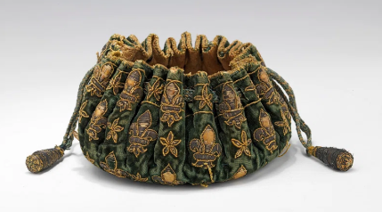
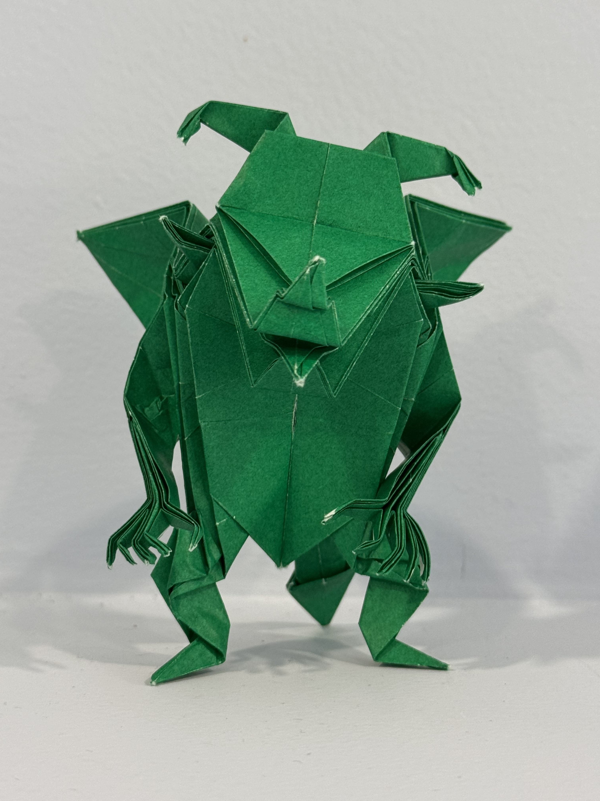
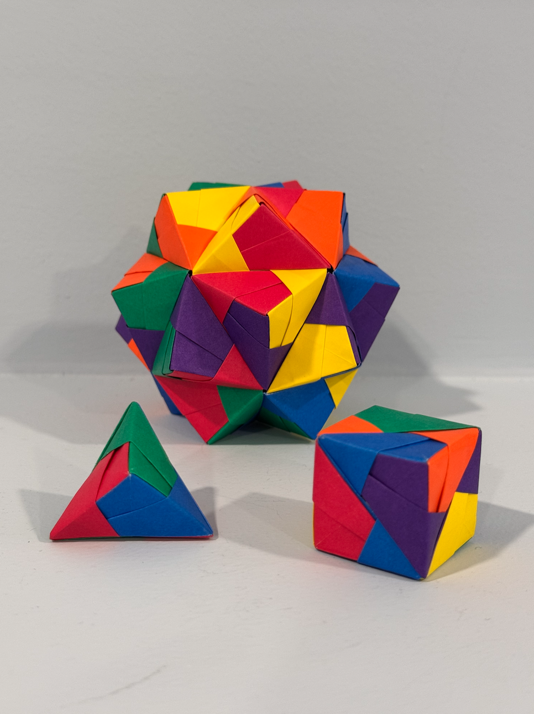
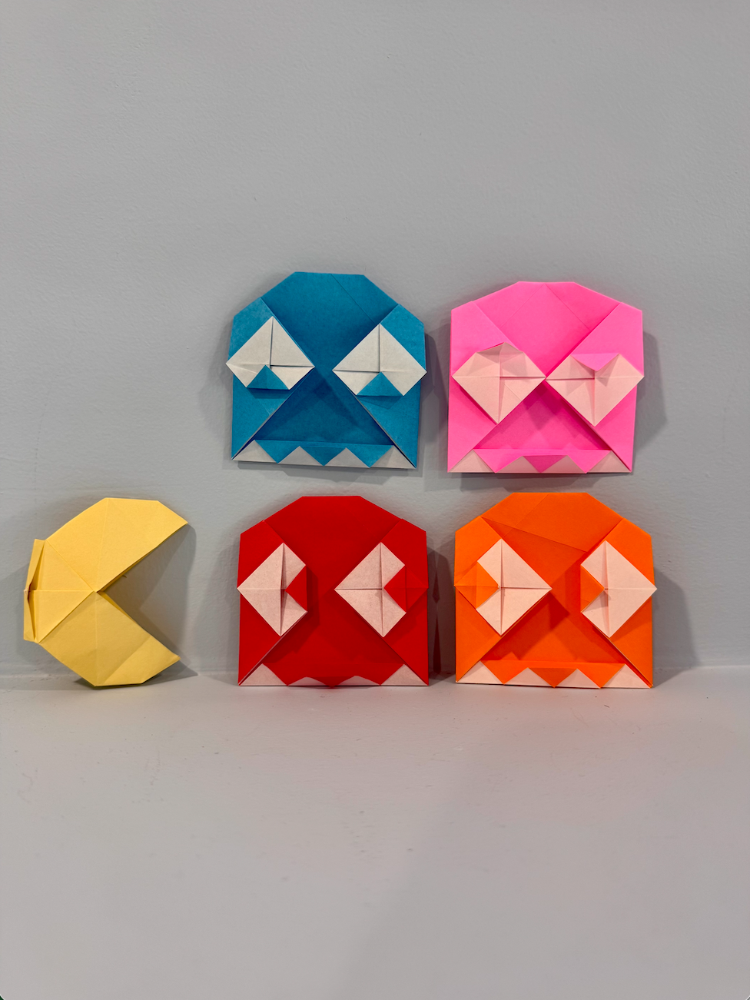

CDMMEA Junior Festival Orchestra Performances
In eighth grade and ninth grade, I auditioned for the Junior District Festivals. I was selected as the principal trumpet player for the orchestra both times. The videos can be found here.
2024 Festival
2025 Festival
Music Compositions
I composed these songs for fun, but eventually I would love to see them as video game music. I originally created the first few measures of "A Harmonic Minor 12/8" with the website Chrome Music Lab several years ago, and recently, I decided to complete it with Musescore 4. I composed "6/8 Boss Tracks" because I was experimenting with creating songs by using chords. When I created "Epic Music", I was experimenting with composing songs with multiple instruments. I am very proud of the melody. "Loop" was originally made by me in Chrome Music Lab as a song for a game, and I later remade it and improved it in Musescore.
- A Harmonic Minor 12/8 | mp3 | Sheet music
- 6/8 Boss Tracks | mp3 | Sheet music
- Epice Music | mp3 | Sheet music
- Loop | mp3 | Sheet music
Dance Recitals
I danced since I was 3 years old until I was in 8th grade. I enjoyed the dances but I was more interested in the songs we used in the dances. Here are some of the dance recitals. The videos were purchased through Miss Patty's Dance Studio and Elite Academy of Dance.
HTML Portfolio

I took an HTML and JavaScript class during the first semester of my Sophomore year, and I learned how to create websites with HTML and CSS. As my final project, I created a choose-your-own-adventure story made up of many webpages linked by hyperlinks!
Enter the Spooky Scary Dungeon!Origami
Here are some samples of my origami. On the left is the Devil designed by Jun Maekawa, folded by me. It has been submitted to OrigamiUSA's Origami by Children exhibition's first round of selections. The middle photo shows some unit origami models I folded: A triangular bipyramid made up of 3 units, a cube with 6 units, and a stellated icosahedron of 30 units. This type of origami is called unit origami because many small units are put together to make a large model without using glue. On the right is an origami Pac-Man, designed by Wellington F. Oliveira, with ghosts based on the design by Juston Hairgrove.


